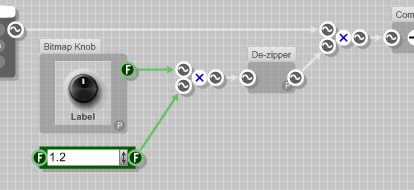
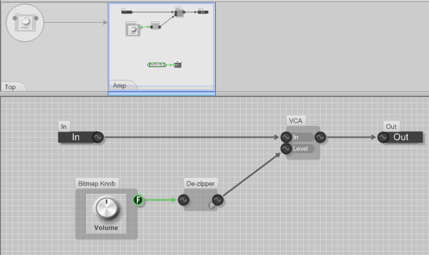
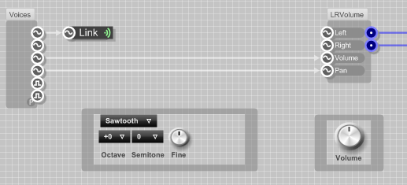
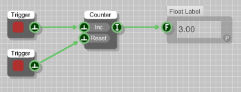
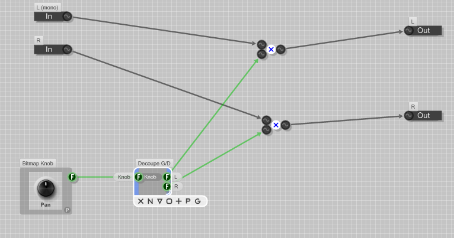
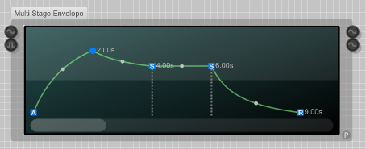
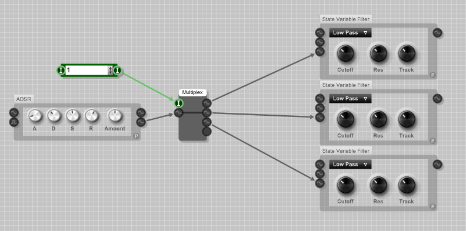

J'en avais rapidement parlé dans mon cours sur FL Studio, SynthMaker est une application qui permet de créer des synthétiseurs virtuels sans avoir besoin d'écrire de ligne de code. Pour cela, nous avons à disposition de nombreux éléments modulables que l'on peut relier entre eux.
J'utiliserai FL Studio comme support, il est donc préférable de connaître quelques bases à son sujet.
On va tout d'abord ouvrir Synthmaker. Par défaut, il est déjà intégré à FL Studio, vous pouvez donc l'ouvrir en passant par le menu « Channel ». Si vous ne l'avez pas, vous devrez le télécharger.
Ce logiciel est payant, mais vous avez tout de même une version d'évaluation de trente jours.
Lorsque vous ouvrez Synthmaker, un projet par défaut s'ouvre automatiquement. Le problème, c'est qu'il n'est pas vide. :o Nous sommes sur le Site du Zéro, on se doit de partir d'un projet vide. Vous verrez également par la suite qu'il est ennuyeux de devoir tout supprimer à chaque fois.
Il faut donc aller dans option / application et choisir « Empty schematic » :
Passer en mode développeur
Pour avoir à disposition tous les éléments, il est indispensable de se mettre en mode développeur. Il faut tout simplement aller dans option puis cocher « Developer Mode » :
Pour que notre synthétiseur puisse fonctionner correctement, il faut qu'il sache quand l'utilisateur joue une note.
Pour cela, on va mettre une entrée MIDI :
Faites ensuite glisser l'élément dans la zone de travail pour l'ajouter.
Nous allons maintenant nous intéresser à l'élément suivant : on voit sur sa droite un « M » entouré. C'est une sortie. Les entrées sont sur la gauche, mais ici il n'y en a pas. Cette sortie est de type MIDI. Il existe bien entendu plusieurs types d'entrées et de sorties mais on ne peut pas relier deux types différents (sauf dans de rares cas).
Les signaux MIDI contiennent beaucoup d'informations (note jouée, vélocité…) et l'on doit séparer toutes ces informations pour pouvoir les exploiter. On va donc ajouter un autre élément, le « MIDI to poly » :
Comme on peut le voir, ce nouvel élément possède une entrée de type MIDI que l'on peut relier au « MIDI In », mais aussi, et surtout, plusieurs sorties de types différents.
La première sortie « Frequency » correspond en quelque sorte à la note jouée. Elle est de type « poly ». C'est une valeur numérique souvent variable.
Du même type que « Frequency », nous avons le « Pitch » de la note.
La vélocité, c'est le volume de la note.
« Gate » est également de type « Poly » car elle est de la même couleur. Elle possède toutefois une petite particularité, elle est booléenne, c'est-à-dire que sa valeur peut être soit 0 soit 1. On parle alors de niveaux logiques. Ici, le niveau logique haut (1) correspond à une note jouée et le niveau logique bas (0) apparaît quand on relâche la note.
« Trigger » prend un niveau logique haut quand une nouvelle note est jouée. Cette sortie est différente du « Gate ». Imaginez que l'on joue une note (gate = 1), puis une seconde sans relâcher la première. Puisque la valeur « Gate » ne redescend pas à 0, on ne peut pas savoir qu'une nouvelle note est jouée.
Après l'entrée, la sortie
Il faut que notre synthétiseur puisse envoyer le son qu'il produit au logiciel qu'on utilise. Aucun intérêt sinon. :D Un élément est prévu pour cet usage : l'« Audio Out ».
Cet élément possède deux entrées de type « Audio Mono » : une pour le côté droit, une autre pour le côté gauche. Le type audio est tout simplement un signal audio audible. Cet élément possède aussi une sortie, mais on ne s'en servira pas.
Puisque nous allons travailler avec des signaux de type « Poly », il nous faudra un élément qui fasse la conversion « Poly / Mono ». C'est le « Combiner » :
Configuration : OK.
Entrée / sortie : OK.
Faire du bruit : RDV au prochain chapitre.
Schéma requis avant de passer au prochain chapitre :
Nous nous sommes occupés de l'entrée et de la sortie. Nous allons maintenant voir un certain nombre d'éléments destinés à produire du son ou à le modifier.
Un oscillateur est un élément qui produit un signal périodique. C'est un signal électrique qui est tantôt positif, tantôt négatif. En bref, il produit une onde sonore.
Voici quelques exemples des formes d'ondes :
Pratique
Le Multi Osc
Pour ajouter un oscillateur, il faut aller dans l'onglet « OSC » de l'explorateur. Nous débuterons par le « Multi Osc » :
Il suffit de le brancher entre l'entrée et la sortie. Vous pouvez ajouter l'élément « Scope » pour visualiser l'onde obtenue en la sélectionnant sur l'oscillateur. Pour l'écouter, il faut retourner sous FL Studio et jouer quelques notes. Le son obtenu n'est pas très excitant, mais ce n'est qu'un début.
Cet oscillateur possède une autre entrée « Phase (0-1) ». Elle permet de mettre légèrement en avance ou en retard l'onde s'il y a plusieurs oscillateurs. Nous reverrons ceci plus tard.
Les oscillateurs simples
Nous utiliserons le « Multi Osc » qui est complet dans la plupart des cas. Néanmoins il existe d'autres oscillateurs simples, où l'on ne peut pas sélectionner la forme d'onde. Prenez par exemple la « Sine » :
Pour faire simple, il faut convertir le signal de fréquence en signal 0-1. On va donc devoir rajouter un élément qui fait la conversion « Hz to 0-1 » :
Les oscillateurs où il est marqué « Freq (Hz) » n'ont pas besoin d'un convertisseur. En revanche, si le signal est de type 0-1, il faudra placer un convertisseur « 0-1 to Hz » qui fait la conversion inverse.
Les autres oscillateurs
Il existe d'autres oscillateurs plus interactifs comme le « wave player » qui permet d'ouvrir des fichiers wave, ou le « wave draw osc » qui permet de dessiner la forme d'onde :
Il existe enfin un dernier oscillateur, le « Additive Osc » :
Chaque trait vertical représente une fréquence sinusoïdale.
Il s'agit de donner un son plus grave ou plus aigu à notre oscillateur. Pour cela, on va ajouter l'élément « Detuner » :
Nous disposons de trois paramètres pour effectuer un réglage précis.
On peut visualiser la valeur de la fréquence en plaçant un « Poly readout » juste après :
Souvenez-vous, le signal « Poly » est un nombre. Cet élément permet de visualiser ce nombre.
Petite manipulation
Pour vous faire un peu manipuler, nous allons créer nous-mêmes un « Detuner » avec un seul bouton rotatif pour le moment. Comme je ne vous ai pas montré suffisamment d'éléments pour que vous le fassiez tous seuls, je vais vous guider.
Nous savons qu'il faut fournir un nombre à l'entrée de l'oscillateur. Ce nombre correspond à une fréquence. Pour modifier ce nombre, on peut l'additionner à un autre, le soustraire, le multiplier.
Nous devons donc utiliser un de ces éléments mathématiques :
Prenons la multiplication qui est plus appropriée dans notre cas :
Nous voulons ensuite choisir la valeur à multiplier avec un bouton rotatif. Nous pouvons en choisir un dans l'onglet « Control » de l'explorateur :
Ah, problème ! La sortie du bouton n'est pas du même type que l'entrée de l'opérateur.
Pas de panique ! ;)
La sortie du bouton est de type « Float », c'est-à-dire un nombre à virgule :
Oups j'ai volé le tableau à M@teo21 :D , il ne va pas être content ! :-°
Bon, comme on peut le constater sur le tableau, ce nombre peut être très grand, négatif et à virgule. Quelquefois, on trouve des int représentés par un « I » blanc entouré sur fond vert. Nous pouvons visualiser la valeur d'un float avec un « Float label » :
Le type « Poly », souvenez-vous, est aussi un nombre. On peut alors penser qu'il est tout à fait normal de multiplier un nombre par un autre. C'est pour cette raison que l'on peut relier un « Float » à un « Poly », mais pas l'inverse ! Cette connexion est l'une des rares que l'on peut établir entre deux types différents.
Reliez donc notre bouton à l'opérateur et faites quelques tests.
On s'aperçoit que l'on ne monte pas beaucoup dans les aigus. En effet, notre bouton varie entre 0 et 1. Il serait préférable de multiplier la fréquence au moins par 5. Deux solutions s'offrent à nous.
Modifier l'étendue du bouton en cliquant sur le petit « p » en bas à droite. Cette méthode n'est pas très pratique pour peu qu'on veuille changer de bouton. On doit alors se souvenir de l'étendue et reconfigurer le bouton.
Ajouter une multiplication par 5.
Nous opterons pour la deuxième solution. Pour ajouter une valeur constante, il faut aller dans l'onglet « Elements », et prendre le « Float » ou un « int », qui est plus approprié dans ce cas.
Au final, nous obtenons ceci :
Cette fois-ci, nous montons bien dans les aigus, c'est parfait. ^^
C'est une commande très basique que l'on doit retrouver dans notre synthétiseur. Nous devons pouvoir baisser le volume ou l'augmenter légèrement. Il existe pour cela un élément « AMP » :
On remarque déjà un petit inconvénient, il est impossible d'augmenter le volume. Nous allons donc refaire nous-mêmes un contrôle de volume. :D De toute façon, il aurait été trop simple d'en rester là.
Puisque nous avons déjà vu tous les éléments nécessaires, je ne vous guiderai pas comme pour le précédent mini TP. Je vous donnerai cependant une réponse détaillée et expliquée.
Bon, c'est parti ! Virez-moi ce volume tout fait, et créez-en un beau à glissière. :diable:
Correction

Le contrôle du volume est exactement identique au contrôle de la fréquence. La seule chose qui les différencie est que le contrôle de fréquence se fait avant l'oscillateur, et le contrôle de volume après.
Avant d'aller plus loin, nous allons étudier le signal de sortie de l'oscillateur avec un « Poly readout ». Il est impossible de lire la valeur, car elle change sans arrêt. Souvenez-vous, le signal « Poly » est un nombre (oui ça on sait ! :D ) qui peut être variable. En voici justement un exemple : la sortie de l'oscillateur varie entre 1 et -1. La vitesse de variation correspond à la fréquence d'entrée. Par exemple, si la valeur de la fréquence d'entrée vaut 440 (Hz), la sortie variera 440 fois entre 1 et -1 toutes les secondes. Pour vous expliquer à quoi vont servir ces variations, elles seront ensuite converties en courant électrique. Ensuite, tout se passe dans les haut-parleurs. Quand la valeur est à 1 la membrane avance, et quand elle est à -1 elle recule. La vibration de l'air ainsi créée va faire vibrer vos tympans, et vous allez entendre un son.
Pour modifier le volume, nous allons tout simplement multiplier le signal de sortie de l'oscillateur par un nombre. Quand on le multiplie par 1 le volume est inchangé, par 0.5 le volume est diminué de moitié, et par 1.2 le volume est légèrement augmenté.
Nous utiliserons le même procédé pour modifier la fréquence :
Le « De-zipper » est une sorte de protection. Elle empêche les « clicks » lors des transitions.
De cette manière, nous avons exactement la même chose que notre volume tout fait. On ne peut toujours pas augmenter le volume.
Rien de plus simple, nous allons ajouter une multiplication par 1.2 :
On place la multiplication avant le « De-zipper » de préférence, car les « Clicks » peuvent apparaître quand on relie un signal « Float » à un signal « Poly ».
Nous avons presque fini, on a dit un bouton à glissière. Vous allez maintenant vous apercevoir pourquoi il est plus pratique de ne pas modifier l'étendue du bouton :
Quand j'ai remplacé le bouton, je n'ai pas eu besoin de modifier l'étendue directement sur celui-ci. C'est plus pratique, plus rapide et cela évite un bon nombre d'erreurs. Si vous voulez quand même modifier les propriétés du bouton, il faut cliquer sur le bouton « p » en bas à droite.
Voilà c'est tout bon ! :)
Vous savez :
placer un oscillateur pour faire du bruit ;
modifier la fréquence de l'oscillateur ;
modifier le volume.
Avec ça, nous pourrons faire un vrai synthétiseur qui fait un bon bruit. :D
Avec le peu de choses que nous savons faire, nous devrions avoir un bon rendu. Vous devez tout d'abord vous demander ce qu'est un Eurosynth. C'est un synthétiseur qui produit un son que l'on retrouve généralement dans l'Eurodance. L'Eurodance est un genre musical caractéristique de la dance populaire européenne de 1990 (durant sa grande expansion) jusqu'à nos jours.
Pour reproduire le son caractéristique de l'Eurosynth, il nous faut :
trois oscillateurs en dents de scie (sawtooth) ;
pouvoir multiplier la fréquence que chaque oscillateur de 0.97 à 1.03 ;
pouvoir régler le volume de chaque oscillateur et le volume général.
Il y aura quelques réglages à faire. Je vous les indiquerai quand votre synthétiseur sera opérationnel.
STOP ! Ne descendez pas plus bas si vous n'avez pas fini. :D
Adapter la sortie
Vous vous en êtes surement déjà rendus compte, nous ne pouvons pas modifier le volume depuis FL Studio. Il faut utiliser la sortie « Volume » de notre entrée. Il existe un élément tout prêt pour exploiter le volume et la balance de FL Studio : le « LRVolume » :
Pendant qu'on y est, dans le cahier des charges, il est indiqué que l'on doit pouvoir modifier le volume général. L'entrée « Volume » de l'élément « LRVolume » permet de le faire. C'est d'ailleurs pour cette raison que nous l'avons reliée à l'entrée volume de FL Studio. Mais si nous voulons modifier le volume dans notre synthétiseur, il va falloir apporter une petite modification :
Cette petite modification étant faite, il ne reste plus qu'à travailler entre la première sortie de l'entrée et les deux premières entrées de la sortie.
Partie oscillateurs
Nous avons dit qu'il nous fallait trois oscillateurs en dents de scie. Je vais faire le plus difficile pour les sadiques. :diable:
Bon, jusque-là, tout le monde suit ? Ensuite, on doit pouvoir modifier la fréquence en la multipliant par un chiffre compris entre 0.97 et 1.03 (sans modifier l'étendue du bouton sinon c'est trop facile :diable: ).
Notez que là, il fallait aller chercher des opérateurs que l'on n'avait pas encore vus, mais je dirais qu'avec un peu de logique (et d'habileté avec les maths :D ) ça pouvait quand même se faire.
Une fois que notre « Float » de sortie varie entre 0.97 et 1.03, on peut le multiplier à la valeur de notre fréquence :
J'ai un peu tout compressé pour que l'image ne soit pas trop grande. Rien ne vous empêche de prendre beaucoup plus de place. Répétez l'opération sur les trois oscillateurs. Il ne reste plus qu'à mettre un contrôle de volume sur chaque oscillateur. Rien de compliqué, on l'a déjà fait.
Schéma final :
Vous devriez avoir plus ou moins la même chose. Personnellement, je me suis passé du contrôle de volume sur chaque oscillateur.
On va maintenant s'occuper de la partie graphique en mettant tout ce que l'on a fait dans un module. C'est un élément un peu particulier que l'on verra dans le prochain chapitre. Pour cela, il faut tout sélectionner avec CRTL + A :
… puis cliquer sur le petit carré surligné en jaune. Tout votre projet sera alors remplacé par un petit carré gris. Il faut double-cliquer dessus pour descendre à l'étage en dessous et voir ce qu'il y a dedans. Vous y retrouvez tout votre projet. Il faut donner un nom à chaque bouton en cliquant sur le petit « P » en bas à droite :
Remontez ensuite à l'étage au-dessus :
Et cliquez sur le « G » :
Agrandissez ensuite un peu la fenêtre et utilisez CTRL + E pour commencer à déplacer les boutons :
Une fois que tout est bien placé, refaites CTRL + E pour les bloquer. Votre synthétiseur est presque fini, il ne reste plus qu'à l'exporter dans FL Studio. Pour cela, rendez-vous dans File → Export FL Studio plugin :
Donnez un nom, un emplacement et c'est bon !
Pour l'ouvrir sous FL Studio, allez dans le menu Chanel → Add one → More, faites un « fast scan » et vous le retrouverez écrit en rouge :
Voilà, votre premier synthétiseur est terminé.
Réglages
Pour bien recréer le son de l'Eurosynth, il faut baisser très légèrement la fréquence du premier oscillateur et augmenter très légèrement la fréquence du troisième oscillateur comme ceci :
On obtient un son bien plus riche, caractéristique des synthétiseurs de l'Eurodance.
Le but de ce TP était de vous montrer qu'avec peu de connaissances, on pouvait réaliser des synthétiseurs déjà avancés.
Dans le chapitre précédent, on a utilisé un module sans vraiment comprendre comment il fonctionnait. Vous allez voir qu'il est indispensable pour bien organiser votre projet.
Une primitive est un élément basique dont le comportement est toujours le même et ne peut être changé. On reconnaît une primitive grâce à sa couleur de fond noir :
Un module est un élément qui peut contenir un ensemble de primitives ou même de modules. On peut ainsi créer des fonctions complexes pour organiser un projet. Par exemple, le contrôle de volume est un module, sa couleur de fond est grise :
Pour voir ce que contient un module, il faut double-cliquer dessus, vous serez alors redirigé à l'étage plus bas :

On observe que le module « AMP » se compose d'un bouton rotatif, d'un « De-zipper » et d'un module « VCA » (Voltage Control Amplitude). Le module VCA permet de contrôler le volume d'un signal à partir d'une valeur que l'on peut obtenir par un bouton rotatif entre autres. Comme le VCA est un module, on peut aller voir de quoi il se compose :
Il se compose d'une simple multiplication.
Vous devriez commencer à comprendre comment on va organiser notre projet avec les modules : il faudra en mettre suffisamment (dans une certaine mesure tout de même) pour que dans chacun d'eux il n'y ait pas trop d'éléments et que l'on puisse comprendre facilement ce que l'on a fait.
Si vous êtes un peu curieux, allez voir dans le « Detuner » et dans le « Multi Osc ». ;)
On va ensuite ajouter un module vide en appuyant sur la touche M, avant de se rendre dans ce module. Pour qu'il ait un minimum d'intérêt, placez un « Detuner », un oscillateur et un contrôle de volume :
Maintenant, il serait bien de faire entrer le signal, de le faire passer dans nos éléments puis de le faire ressortir. On va donc brancher un « Module Input » devant le « Detuner » et un « Module Output » après le contrôle du volume :
Si l'on remonte à l'étage au-dessus, on voit que notre module a désormais une entrée et une sortie :
Vous pouvez en mettre autant que nécessaire.
La face avant
Autre chose très importante : avec un module, on peut éditer la face avant (ce que l'on a fait dans le chapitre précédent). Pour cela, il faut cliquer sur le petit « G » :
Pour déplacer les éléments, il faut cliquer sur le cadenas ou bien faire CTRL + E :
Les liaisons sans fil
On a vu qu'il existait des liaisons filaires pour entrer et sortir d'un module, mais sachez qu'il existe aussi des liaisons sans fil pour passer d'un module à un autre si le projet est déjà très encombré.
Montez à l'étage du haut et placez un « Wireless Output » que vous brancherez sur la sortie « Frequency » de votre entrée :
Allez ensuite dans votre module fraîchement créé et remplacez votre « Module Input » par un « Wireless Input » :
Si l'icône est verte, la liaison est correcte. Cette liaison ne peut se faire que pour entrer dans un module.
Liaison sans fil entre modules
Il existe un autre type de liaison sans fil qui permet de relier deux modules. Pour l'exemple, je vais déplacer le contrôle de volume dans un autre module comme ceci :

On va ensuite aller dans notre premier module et placer un « ModuleWireless Output » :
Allons ensuite dans l'autre module qui se situe à côté et plaçons un « Wireless Input » :
L'icône est verte, donc la liaison est bien faite. Pour bien s'assurer de l'état de la liaison, on peut aussi regarder la face avant du premier module :
Si l'icône en bas à droite est verte, la liaison est correcte.
Il se peut que vous rencontriez des problèmes dans les liaisons sans fil. Pour qu'une liaison soit correcte, il faut qu'elle soit du même type de chaque côté. Pour changer le type d'une entrée ou d'une sortie, il faut faire un clic droit dessus :
On va maintenant reprendre le projet de notre Eurosynth pour voir comment on peut l'organiser :
Comme je l'ai dit auparavant, on ne doit laisser qu'un seul module qui comporte des éléments graphiques au premier étage. Vous comprenez donc pourquoi je vous avais fait faire un module. On ne va donc pas y toucher et descendre à l'étage en dessous :
Là, il y a du boulot. :D
Bon, j'ai envie de commencer par ça :
Souvenez-vous, c'est ce qui fait la conversion « 0-1 » à « 0.97-1.03 », c'est parfait pour le placer dans un module :
On les sélectionne, on clique sur le petit carré et le module est fait. Il est important de mettre des noms aux modules que l'on crée soi-même :
À répéter pour les trois exemplaires.
Ensuite, l'opérateur de multiplication permet de contrôler la fréquence. On peut lui faire un module rien que pour lui en lui donnant comme nom « VCF » (Volt Control Frequency).
On peut ensuite mettre le bouton rotatif, le convertisseur et le « VCF » dans un autre module que l'on appellera « Detuner ». À ce stade, vous pouvez aussi modifier l'interface de ce module. Il ne comprend qu'un bouton, mais quand il y a plusieurs éléments, cela permet de les « prégrouper ».
Continuons, on peut aussi regrouper l'oscillateur avec le « Hz to 0-1 ».
On n'oublie pas le volume et je pense que ça devrait être bon. On peut encore en rajouter, mais il ne faut pas qu'il y en ait trop non plus.
Bon vous savez tout sur les modules. Ce chapitre était un passage obligatoire, car on n'aurait pas pu voir d'autres éléments plus complexes sans être un minimum organisé.
Ces éléments sont indispensables, vous allez tout le temps en avoir besoin. Je vous en ai montré quelques-uns dans les chapitres précédents car sans eux, on n'aurait pas pu faire notre premier TP.
Dans la rubrique « Maths », on a un certain nombre d'éléments pour faire des opérations simples comme l'addition, la soustraction, la multiplication...
Par exemple ici on a une suite d'opérations avec des « Floats », ils sont très pratiques, car ils permettent d'avoir une virgule.
On retrouve presque les mêmes opérateurs avec les « Int », mais ce ne sont que des nombres entiers :
On retrouve en plus un élément modulo qui donne le reste d'une division :
Des éléments trigonométriques pour les « Float » comme sinus, cosinus et tangente :
Je ne vais pas vous faire un cours de maths, je vous les présente juste. Ça peut être utile si par exemple vous décidez de faire un bouton rotatif qui ne varie pas linéairement, ou plein d'autres choses.
Autre chose de plus simple, les inversions :
Très simple également, les éléments « Max » et « Min ». L'élément « Max » prend la plus grande valeur des deux entrées et le « Min » la plus petite des deux :
Existe aussi en version « Int ».
Avant d'en finir avec les opérations, j'aimerais préciser que vous trouverez certaines d'entre elles en version « Poly ». Notamment la multiplication qui est très utile pour contrôler la fréquence, le volume ou n'importe quel autre paramètre comme ceci :
Il est quelquefois recommandé de mettre un « De zipper ».
Les deux entrées sont de type « Float ». On va donc comparer deux « Float », s'il sont égaux la sortie prendra un niveau logique haut (souvenez-vous des booléens).
Bien sûr il y en a d'autres :
Bon je ne pense pas que les signes devraient vous poser problème.
En parlant de booléens, on retrouve aussi ce que l'on appelle des portes logiques :
La première est une porte « ET » et la seconde une porte « OU ». Remarquez que les entrées et les sorties sont de type booléen.
Leur fonctionnement est simple. Pour la porte « ET », la sortie prend la valeur 1 si la première entrée ET la deuxième entrée sont à 1. Pour la porte « OU », la sortie prend la valeur 1 si la première entrée OU la deuxième entrée OU les deux entrées sont à 1.
Pour finir, je vais vous présenter quelques autres éléments utiles.
On va commencer par les compteurs :
On n'a pas encore vu ce type d'entrée, c'est presque la même chose que les booléens sauf que c'est sous forme d'impulsion.
Par exemple, la première entrée de notre compteur compte le nombre d'impulsions de 1. On l'utilise généralement avec un « Trigger », c'est un bouton poussoir. Quand on appuie dessus la valeur monte à 1 et dès qu'on le relâche la valeur redescend à zéro. Créant ainsi des impulsions de 1 :

La deuxième permet de remettre le compteur à zéro.
Il existe une version évoluée de ce compteur où l'on peut régler une valeur maximale, une valeur minimale, une valeur de départ, compter en montant ou en descendant…
Il suffit de traduire, pas besoin d'être bilingue. « Reached Max » donne une impulsion quand la valeur maximale est atteinte. On peut ainsi le remettre à zéro automatiquement en faisant un bouclage comme ceci :
Généralement, on nome « Feedback » la liaison entre une sortie et une entrée d'un même module. On ne peut la faire que sous certaines conditions.
On va continuer avec les boucles :
C'est très simple. On donne un nombre de départ, on lance la boucle et elle va aller jusqu'à la valeur choisie en comptant. La seule chose qui est dommage c'est qu'on ne peut pas régler la vitesse. On peut cependant l'améliorer, avec quelques divisions le problème est vite résolu.
Et on termine avec le générateur de nombre aléatoire :
Bon rien de compliqué, une impulsion et hop, un nombre aléatoire en sortie.
Il n'y avait pas grand-chose de concret pour faire un synthé dans ce chapitre, je suis d'accord avec vous.
Mais on va faire un second TP pour résoudre un problème, très concret lui. Vous verrez alors que sans la manipulation des nombres, ben on ne va pas loin. :D
Nous voici dans notre second TP. Il s'agit de l'application directe des éléments mathématiques.
Tout d'abord, la balance qu'est-ce que c'est ? C'est en général un bouton rotatif qui, lorsqu'il est positionné au milieu, n'apporte aucun changement au son. Quand on le tourne à droite, on n'entend que les sons venant de droite et inversement pour la gauche. Je ne sais pas si vous avez remarqué, mais il n'y en a pas, nous allons donc le faire nous-mêmes.
Nous allons donc créer un module que nous sauvegarderons à la fin pour l'avoir toujours à disposition sans le refaire.
Ce module comportera au choix :
une seule entrée « Poly » (mono) ;
ou deux entrées « Poly », une pour la droite et une autre pour la gauche (stéréo).
Très franchement, cela ne change pas grand-chose pour la suite. La deuxième solution est tout de même meilleure, car on pourra dans ce cas régler un signal déjà stéréo à la base. On aura deux sorties, une pour chaque côté. Certains seront tentés de rajouter une troisième entrée pour le bouton rotatif. Il vaut mieux l'intégrer dans votre module et faire un sous-module pour la partie calcul.
Bien entendu, on ne changera rien au bouton pour pouvoir le modifier facilement (par une glissière horizontale par exemple).
Bon, je crois que c'est tout, vous pouvez y aller. Ce TP demande beaucoup de réflexion, car il faut être habile avec les maths. Je vous avoue qu'à l'époque j'avais mis plusieurs heures avant d'y parvenir.
Pour ceux qui ne sauraient pas comment s'y prendre, je vous donne quelques indices par la suite, mais avant d'aller les voir réfléchissez un peu, faites des tests, beaucoup de tests même. ;)
Vous êtes perdu, rien ne marche, ce que vous voulez faire semble beaucoup trop compliqué ?
Il est vrai que quand on y réfléchit un peu, cet élément paraît très simple, mais sa construction est un vrai casse-tête.
Indice no 1
Tout d'abord, reprenons le cahier des charges, deux entrées et deux sorties :
Ça O.K., une pour chaque côté.
Quand le bouton est à droite, on ne devrait entendre que le canal de droite et inversement pour la gauche. Il faudrait alors multiplier par un le canal de droite et par zéro le canal de gauche quand le bouton est tourné sur la droite :
Ça devrait donner quelques idées à certains, si c'est le cas n'allez pas plus loin et essayez de continuer votre balance.
Pour ceux qui sont encore largués, je vous invite à continuer. Ne vous inquiétez pas, cet exercice n'est pas simple et je ne vais pas vous donner la correction tout de suite.
Indice no 2
Quand le bouton est en position centrale, il faut multiplier par 1 le côté gauche et le côté droit. Mais quand on tourne le bouton d'un côté, il faudrait atténuer l'autre côté en le multipliant progressivement par 0.8, 0.6, 0.4 et ainsi de suite. Bien sûr tout en laissant la multiplication par 1 du côté où on tourne le bouton.
Il serait bon de faire toute la partie calcul dans un sous-module comme ceci :
Bon c'est tout pour les indices, je vous laisse trouver toute la partie calcul.
Essayez vraiment de trouver, dites-vous que c'est une simple balance, d'autres choses plus compliquées arriveront par la suite.
Si vous n'avez pas trouvé et que vous n'y avez pas passé au minimum quelques heures, je vous interdis de lire la suite. :colere2:
Même moi je n'ai pas trouvé la solution le premier jour, j'ai dû attendre le lendemain. La nuit porte conseil, attendez un jour avant d'abandonner.
Bon pour ceux chez qui ça marche, félicitations ! Vous pouvez continuer à l'aise. :D
Je vais vous détailler un peu ma solution, il est possible que la vôtre soit différente. Vous êtes prêt ? Accrochez-vous, car l'explication n'est pas simple.
Je vous montre d'abord le côté gauche, le droit est presque pareil :
On part de gauche, l'entrée c'est le bouton rotatif qui varie de 0 à 1. Je commence à le multiplier par deux, de cette manière quand le bouton sera en position centrale il prendra la valeur 1. Cela nous sera utile par la suite.
Ensuite je fais une comparaison, si la valeur est supérieure à 1 c'est que l'on se trouve du côté droit du bouton. Donc si on se trouve de ce côté, la sortie prendra la valeur 1, c'est-à-dire que si le bouton se trouve du côté droit, on va atténuer le côté gauche. Un peu plus bas j'ai fait une soustraction, j'enlève 1 à la valeur du bouton. Comme ça, quand le bouton se trouve en position centrale la sortie vaut zéro et varie jusqu'à 1 quand on le tourne vers la droite. Je le multiplie ensuite à la sortie de la comparaison, de ce fait si l'on tourne le bouton à gauche la comparaison vaut zéro. Si l'on multiplie par zéro ça fait toujours zéro, donc si l'on tourne de l'autre côté on ne risque pas d'atténuer ou d'amplifier.
Pour récapituler, on a en sortie de la multiplication la valeur zéro si le bouton est tourné vers la droite, la valeur zéro quand il est au centre et cette valeur varie jusqu'à 1 quand on le tourne vers la droite.
Comme on veut une atténuation, je fais 1 moins la valeur en sortie de la multiplication pour inverser. Quand le bouton est en position centrale, la valeur vaut 1, donc pas d'atténuation. Si je le tourne vers la droite je vais progressivement le multiplier à zéro. En revanche si je le tourne vers la gauche, la valeur reste à 1. En effet si je tourne le bouton à gauche je ne vais pas atténuer le côté gauche.
Voilà, il ne reste plus qu'à multiplier cette valeur au signal gauche et c'est bon pour ce côté.
Il faut faire quelque chose de similaire pour le côté droit, mais je ne vais pas vous le détailler à nouveau :
Toutes ces opérations sont dans le sous-module juste après le bouton :

Il est conseillé de mettre un « De zipper » sur chaque côté avant de le multiplier au signal « Poly ».
Fiou...
Il n'a pas l'air, mais ce maudit bouton de balance est tout de même costaud.
Si vous en avez encore le courage, je vous propose d'apporter une amélioration. Pour compenser l'atténuation d'un côté, les boutons de balance de certains logiciels modernes amplifient légèrement l'autre côté.
Seconde amélioration, ici quand on tourne le bouton du côté droit on coupe le son du côté gauche. Il existe un autre type de balance qui ne coupe pas, mais déplace le son du côté gauche à droite.
Bon avec ça vous avez de quoi vous occuper un moment si vous le désirez.
Si vous voulez sauvegarder votre module, commencez par ajouter un nouvel onglet à votre navigateur
. Vous y mettrez tous vos modules personnalisés. Placez-vous ensuite dans cet onglet, faites un clic droit sur votre module et choisissez « Add to toolbox ».
Ces derniers chapitres ont été douloureux, bientôt on referas un TP pour faire un autre synthétiseur puissant, courage. :)
On revient dans des chapitres un peu plus soft. Je vais vous présenter trois autres éléments que l'on retrouve dans les synthétiseurs analogiques. Ce chapitre devrait être relativement facile. N'oubliez pas de faire quelques manipulations de votre côté.
On retrouve cet élément dans tous les synthétiseurs. Elle permet de modifier un paramètre en fonction du temps, elle caractérise les propriétés d'un instrument. Je vais vous donner un exemple.
Enveloppe graphique

On va dire que cette enveloppe agit sur le volume. On imagine bien que lorsqu'on appuiera sur une note, le volume va monter progressivement puis redescendre un peu et redescendre complètement une fois que l'on aura relâché la note.
Il y a deux façons de la brancher.
Entre deux éléments comme ceci :
On utilise l'entrée et la sortie prévues à cet effet.
On peut également la brancher comme ceci :
La sortie « Enveloppe » varie entre 0 et 1 suivant les variations sur le graphique. Dans ce cas ce n'est pas utile, car on aurait pu utiliser la méthode d'avant. Mais certains éléments ont une entrée enveloppe : si l'on branche la sortie « Out » dessus il ne se passera rien, car on n'aura rien branché en entrée. On est alors obligé de brancher la sortie « Enveloppe ». On reverra ceci le moment voulu.
Enveloppe ADSR
Elle suit toujours le schéma suivant :
A comme « Attack » détermine le temps de montée.
D comme « Decay » détermine le temps de déclin.
S comme « Sustain » détermine l'amplitude de maintien.
R comme « Release » détermine le temps de relâchement.
Avec les boutons ça donne ceci :
« Amount » permet de régler l'impact de l'enveloppe, vous pouvez aller voir vous-même à quoi il sert en allant regarder dans le module.
Cette enveloppe existe aussi dans cette version :
Dans certains cas ça peut être utile, si on veut faire des choses compliquées. :diable:
Les autres enveloppes
AHDSR
On ajoute un maintien juste après l'Attack :
AHD
Attack, maintien (Hold), déclin :
D
Seulement le déclin même si on garde la note enfoncée :
Le plus complet est le « State variable filter » :
On peut sélectionner le type de filtre, régler la fréquence de coupure (cutoff), la résonance et l'impact du filtre.
Je vous invite à placer deux visualisations, une avant et une après le filtre pour observer les changements sur le signal :
Pour observer l'effet du filtre, augmentez la résonance et jouez avec le cutoff.
Je vous propose de placer une enveloppe sur la fréquence de coupure, on va pour cela utiliser l'entrée cutoff du filtre et la sortie « Env » de l'enveloppe :
Explications : l'entrée cutoff permet de régler la fréquence de coupure, cette entrée doit varier entre 0 et 1 (réglage classique). On utilise la sortie « Env » de l'enveloppe, car elle varie entre 0 et 1 en fonction de la forme qu'elle prend. L'entrée « In » et la sortie « Out » servent à placer l'enveloppe entre deux éléments. Comme il n'y a rien en entrée on se sert de la sortie « Env », car elle varie entre 0 et 1 même si on ne branche rien en entrée.
Bon je pense que c'est tout pour le filtre. Je vous inviter à aller observer de quoi il se compose.
Le LFO est un oscillateur de très basse fréquence, quelques Hertz au maximum. Il sert à faire varier un paramètre périodiquement selon sa forme et sa vitesse (= fréquence).
Il se trouve dans la rubrique « OSC » de l'explorateur. Dans l'exemple suivant, je l'applique sur le volume :
Si vous faites ce test, on entend le son qui monte et qui descend à intervalles réguliers. « Speed » permet de régler la vitesse et « Depth » l'impact du LFO.
On peut très bien l'appliquer sur n'importe quel autre paramètre comme la fréquence en le plaçant avant l'oscillateur, le cutoff d'un filtre...
Si vous aller voir de quoi il se compose, vous verrez un simple oscillateur que l'on règle à une fréquence très basse (2 Hz au maximum). Pour vous entraîner, vous pouvez même vous en fabriquer un vous-même.
Pour terminer, je vous en montre un un peu spécial :
Il est très évolué, on peut non seulement dessiner une séquence, mais cette séquence est synchronisée avec le tempo. Si vous l'appliquez sur la fréquence de l'oscillateur, vous pouvez créer des séquences de notes :
Ça peut être très pratique sur un synthé.
Tous les éléments que l'on vient de voir sont basiques, on les retrouve dans tous les synthétiseurs.
Avec tout ça, on peut se construire un synthétiseur qui ressemble à quelque chose.
Il s'agit de fabriquer un synthétiseur complet avec les éléments que l'on a déjà vus, comme le « detuner », le filtre, le LFO… Le synthétiseur sera doté d'une modulation FM, ce qui le rend d'autant plus intéressant.
On a tout d'abord un oscillateur qui va créer un son, puis avec un second oscillateur on va contrôler la fréquence de ce son. Imaginez que le second oscillateur est de très basse fréquence, comme un LFO. Le son du premier oscillateur serait d'abord grave puis aigu, puis grave puis aigu…
Maintenant imaginez que l'on augmente la cadence des « grave puis aigus » : vous obtenez un son particulier, car on ne percevra plus la différence entre les variations de grave et d'aigus.
Voici un petit schéma pour illustrer :
Bien sûr, tout cela à très grande vitesse pour obtenir un timbre particulier.
L'appliquer dans synthmaker
Je ne vais bien entendu pas vous donner la solution de ce que je vous demanderai plus loin, mais une rapide illustration :
trois oscillateurs principaux et audibles munis d'un réglage de fréquence (un « Detuner » par exemple) ;
chaque oscillateur devra être muni d'un réglage de volume et de balance ;
une enveloppe de votre choix devra être appliquée sur le volume de chaque oscillateur ;
le synthétiseur devra comporter au moins un filtre avec un LFO sur sa fréquence de coupure ;
une modulation FM devra être appliquée sur le premier oscillateur ; on devra pouvoir désactiver cette modulation.
Comme vous l'aurez remarqué, il s'agit d'un gros synthétiseur. Vous devrez donc bien vous organiser avec les modules. Pour plus de facilité, faites-le par étapes en respectant l'ordre dans lequel j'ai énuméré les conditions. Bien entendu, ce synthétiseur ne se fait pas en cinq minutes, vous devrez donc être patient. Vous serez amené à modifier des modules déjà existants en ajoutant des fonctionnalités, des entrées, des sorties…
Il est vivement conseillé de tester chaque changement que vous faites au fur et à mesure. Dans le cas contraire, si quelque chose fonctionne mal, vous serez très vite perdu.
Surtout, prenez votre temps, si vous procédez par étapes, ça va tout seul. Bonne chance à vous.
Au début, ça démarre facilement. Oscillateur, « Detuner », volume, balance, enveloppe :
Je vais me passer d'explications pour ce bloc simple. Vous devrez donc le répéter trois fois. Intéressons-nous au filtre : on le place après notre bloc de trois oscillateurs, il doit donc être stéréo, c'est-à-dire qu'il doit avoir deux entrées et deux sorties.
Il va falloir le modifier. Allons à l'intérieur pour voir de quoi il se compose :
Vous voyez l'élément qui se trouve juste avant la sortie ? C'est le filtre. Si l'on en met un second pour le côté droit et qu'on y branche les même réglages, ça devrait le faire.
Un petit copier-coller et le tour est joué ! On peut maintenant l'associer au LFO et le brancher en sortie des blocs oscillateurs :
Pour finir, on va s'attaquer au plus dur : la modulation FM.
Dans un premier temps, on met un oscillateur de modulation :
Puis on le branche au premier oscillateur :
Il reste une dernière chose dans le cahier des charges, on doit pouvoir couper cette modulation :
Avec un petit « Switch », le tour est joué. Quand il est à 1, il y a modulation mais quand il est à 0, si vous revenez à l'image d'avant, on multiplie la fréquence de l'oscillateur 1 par zéro. Il va falloir régler ceci, quand le « Switch » est à zéro, il faut multiplier la fréquence de l'oscillateur 1 par un :
J'ai ajouté un comparateur, quand le « switch » est inférieur à 1, la sortie du comparateur vaut 1. Je l'additionne à la sortie de l'oscillateur de modulation qui devrait avoir la valeur zéro. 0 + 1 = 1. La fréquence de l'oscillateur 1 sera multipliée par 1 quand on aura désactivé la modulation.
La correction est terminée. Pour finir, je vous montre quelques-uns de mes étages.
Étage 1
Étage 2
Je n'ai pas beaucoup soigné mon interface.
Vous avez dû vous en rendre compte, on fait des maths dans tous les synthétiseurs, qu'ils soient simples ou complexes. Cependant, cela reste des opérations simples (addition, multiplication…). Ce qui compte, ce n'est pas d'être bon en maths, mais d'avoir de la logique.
Si vous avez du mal, le meilleur moyen reste l'entraînement.
Pour l'instant, le trajet de nos signaux était statique. On disait par exemple : « Tiens toi, va dans l'enveloppe puis dans le filtre… » Mais une fois exporté, on ne pouvait plus le modifier. Par exemple, si je ne veux placer qu'une seule enveloppe et que je souhaite choisir par le biais de l'interface graphique à quel paramètre l'assigner, eh bien pour l'instant on ne peut pas, mais je vais vous montrer comment faire.
La sortie du switch ne peut prendre que deux valeurs, soit zéro soit un. Associé à la multiplication, on peut commander le signal : soit il passe, soit il ne passe pas.
Pour l'instant ça n'a pas grand intérêt mais on va rajouter quelques élément pour le compléter :
L'élément « Not » est une inversion un peu spéciale. Quand son entrée est à 0, sa sortie prend la valeur 1 et quand son entrée vaut 1, sa sortie prend la valeur 0.
Avec l'exemple précédent, soit un signal est passant soit c'est l'autre. Quand le switch est à zéro, le signal du haut est non passant (car multiplié par zéro) et le signal du bas est passant (car multiplié par 1). Quand le switch est à 1, c'est l'inverse.
Je continue de compléter le schéma :
Observez bien ce schéma, c'est un exemple concret. Il se compose de deux oscillateurs et de deux filtres. Il n'y a qu'une seule enveloppe et avec le bouton je peux choisir de l'appliquer sur le premier filtre ou sur le second. Je pourrais faire ce choix même lorsque le synthétiseur sera exporté, car le bouton se retrouvera sur l'interface graphique.
La méthode que l'on vient de voir présente un défaut, on ne peut avoir que deux sorties pour une entrée. Et si l'on veut avoir le choix entre trois destinations ?
Eh bien, on utilise un multiplexeur ; voici une petite mise en situation :

Je n'ai effectué que les branchements qui nous intéressent pour ne pas encombrer le schéma. On voit que le multiplexeur a une entrée pour le signal, il le redirige ensuite à l'une de ses sorties. On sélectionne la sortie avec son numéro que l'on entre dans l'entrée « Int ».
Le multiplexeur peut prendre presque autant de sorties que l'on veut. Pour choisir la sortie depuis l'interface graphique, il faut remplacer le « Int » par un « selector » :
On peut renommer les items en allant dans les propriétés du sélecteur (« p » en bas à droite).
On va continuer avec un autre problème. Je souhaiterais choisir d'appliquer soit un LFO soit une enveloppe sur mon filtre. Autrement dit, je voudrais avoir le choix entre plusieurs entrées pour une sortie. Il existe un élément pour faire cela, c'est en quelque sorte l'inverse du multiplexeur. C'est le « selector » :
Il fonctionne comme le multiplexeur, mais à l'envers. On choisit l'entrée au lieu de la sortie.
Bon, au final, j'ai un LFO et une enveloppe pour moduler un filtre et l'amplitude. Je dois pouvoir choisir ma source de modulation (LFO ou enveloppe) et ma destination (filtre ou amplitude). Cela donnera une très grande liberté à l'utilisateur.
Cependant, on ne va pas s'amuser à mettre des sélecteurs et des multiplexeurs partout. On va utiliser le « Routing Matrix » :
Il peut faire peur au début, son entrée et sa sortie sont bizarres. Elles sont de type « Bus », le type de signal qui y circule contient plusieurs données. Cet élément ne s'utilise pas seul, il faut lui ajouter des « Matrix source » et des « Matrix target » puis les brancher comme ceci :
On commence déjà à mieux voir comment on va y brancher nos autres éléments :
Ensuite, pour pouvoir faire fonctionner le tout, il faut donner des noms dans les propriétés, car le « Routing Matrix » fait la différence entre deux entrées grâce à leurs noms. Par exemple, je nomme le « Matrix source » de l'enveloppe comme ceci :
Il faut donner un nom différent à chaque entrée et à chaque sortie.
Après avoir donné des noms aux entrées et aux sorties, il faut configurer le « Routing Matrix » :
Dans les sources, il faut marquer les mêmes noms que ceux que vous avez donnés pour les entrées en les séparant par une virgule, pareil pour les sorties. Une fois cela fait, vous n'avez plus qu'à choisir une source et une cible avec les menus déroulants :
La liberté est totale. On peut ainsi appliquer n'importe quelle source à n'importe quelle cible. On peut bien entendu ajouter des « Matrix sources » et des « Matrix target » pour augmenter le nombre d'entrées et de sorties.
Il manque un élément essentiel au « Routing matrix », c'est la quantité de modulation. Je vous invite donc pour vous entraîner à rajouter un bouton rotatif pour pouvoir la régler.
Toujours pour vous entraîner, essayez de faire un synthétiseur modulable, par exemple avec quelques oscillateurs et des enveloppes, LFO, etc. que vous ne brancherez qu'au « Routing matrix » pour que l'on puisse les assigner librement à quelques paramètres de votre synthétiseur.
Ce cours n'est pas terminé, je rédige une seconde partie qui concernera le traitement graphique.
La partie graphique est aussi importante que la partie audio. En effet, si vous envisagez de partager votre synthétiseur, il ne plaira pas s'il n'est pas beau. :)